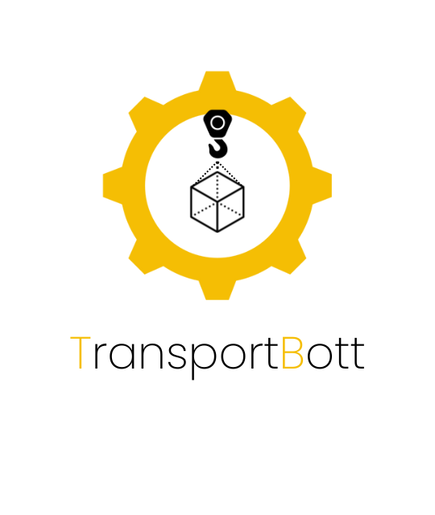

Sistema de invernadero IN-Door autosustentable, con procesos automatizados enfocados en la eficiencia energética, con la capacidad de replicar y controlar condiciones ambientales especificas.

TransportBott
TransportBott
La producción agrícola representa la segunda línea productiva más importante en Colombia, donde la mayoría de los cultivos permanentes y temporales se encuentran en áreas por encima de los 1,000 metros sobre el nivel del mar. En estas regiones, predominan las condiciones topográficas montañosas de pendiente media y alta, lo que limita la mecanización de las principales tareas agrícolas y dificulta el transporte de productos agrícolas. Este último proceso también se ve afectado por la limitada adecuación de la infraestructura, por lo que es un problema aprovechar todo el potencial de desarrollo agrícola que tiene el país. Bajo estas condiciones, en la gran mayoría de las áreas productivas, el transporte de productos agrícolas sigue realizándose de manera artesanal. Por ejemplo, dependiendo de la zona del país, en el sistema productivo en el proceso de producción agrícola en Colombia, la capacidad de carga de una persona oscila entre 20 y 25 kg. Por ejemplo, una persona que pesa 70 kg podría llevar cómodamente entre 14 kg y 17.5 kg. Si multiplicamos esta cantidad por 8 horas de trabajo, obtenemos un total de aproximadamente 240 kg en un día, a una velocidad de aproximadamente 3 km/h para distancias moderadas sin experimentar una carga excesiva. La distancia de viaje en montañas hacia las áreas agrícolas es entre 2 y 8 km/día. Se estima una eficiencia de menos del 50%, porque la persona viaja al lote o punto de cosecha sin carga. Además, una persona tiene una productividad de carga de alrededor de 240 kg por km/día y un costo logístico cercano a $1,100 por kilómetro (t/km). Así, en la producción agrícola, el costo logístico del transporte representa alrededor del 35% de los costos de producción.